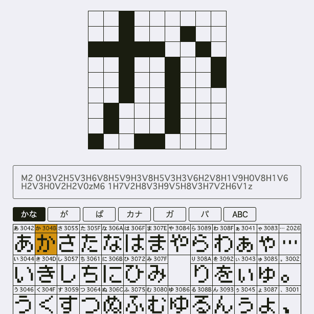
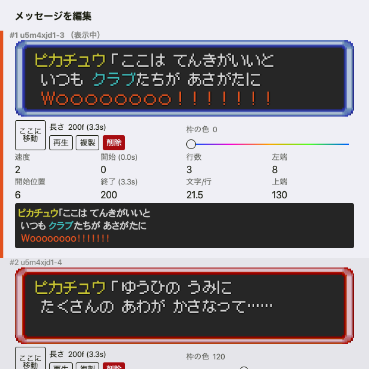

<title>Hook</title>
<meta name="description" content="Hookのサイトです。">
<link rel="stylesheet" href="./style.css">
<main>
    <h1>Hook</h1>
    <svg class="Logo" viewBox="-250 -250 500 500">
        <path d="M-83 -11A117 117 1 1 0 0 -45A73 73 0 1 1 71 -99" stroke-width="30" fill="none"/>
        <circle r="21" stroke="none" cx="71" cy="-99"/>
        <circle r="21" stroke="none" cx="-83" cy="-11"/>
        <g transform="translate(13,-118)">
            <circle r="21" stroke="none" cx="0" cy="0" class="Eye"/>
        </g>
    </svg>
    <h2 id="Applications">アプリ</h2>
    <div class="App">
        <figure></figure>
        <h3><a href="https://hookun.github.io/bitmap-font/" target="_blank">ビットマップ風フォント作るやつ</a></h3>
        <p>ビットマップ風のフォントを編集できます。マス目をなぞるSVGのパスを出せるのでうまいことやればフォントファイルも作れるはず。</p>
        <p>時間ができたら直接フォントファイルを出力できるようにします。</p>
        <ul>
            <li>アプリ：<a href="https://hookun.github.io/bitmap-font/" target="_blank">github.io</a></li>
            <li>リポジトリ：<a href="https://github.com/hookun/bitmap-font" target="_blank">github.com</a></li>
        </ul>
    </div>
    <div class="App">
        <figure></figure>
        <h3><a href="https://hookun.github.io/pokedan/" target="_blank">ポケダンもじもじ</a></h3>
        <p>ポケモン不思議のダンジョン空の探検隊のメッセージウインドウをブラウザに再現します。</p>
        <p><a href="https://hookun.github.io/bitmap-font/" target="_blank">ビットマップ風フォント作るやつ</a>で出したパスのデータをここで使っています。</p>
        <p>After Effectsみたいなタイムラインとかシーンでファイルを分ける機能とか追加したい。</p>
        <ul>
            <li>アプリ：<a href="https://hookun.github.io/pokedan/" target="_blank">github.io</a></li>
            <li>リポジトリ：<a href="https://github.com/hookun/pokedan" target="_blank">github.com</a></li>
        </ul>
    </div>
    <h2 id="Drawings">絵とか</h2>
    <p>想像した動きが出来上がってくるときは面白いのに、着色が大変でなかなか完成しない動画です。道具を使ったり動かしたりすると新鮮な感じがあって好き。</p>
    <h3 id="Twitter">Twitter</h3>
    <div class="TweetList">
        <blockquote class="twitter-tweet"><p lang="und" dir="ltr"><a href="https://twitter.com/hashtag/%E3%81%84%E3%81%AC%E3%81%84%E3%82%89%E3%81%99%E3%81%A8?src=hash&amp;ref_src=twsrc%5Etfw">#いぬいらすと</a> <a href="https://twitter.com/hashtag/%E3%83%98%E3%83%AB%E7%B5%B5%E3%82%B9%E3%82%BF?src=hash&amp;ref_src=twsrc%5Etfw">#ヘル絵スタ</a> <a href="https://twitter.com/hashtag/%E7%B5%B5%E3%83%B3%E3%82%B8%E3%83%A5?src=hash&amp;ref_src=twsrc%5Etfw">#絵ンジュ</a> <a href="https://t.co/XpnxLB73xf">pic.twitter.com/XpnxLB73xf</a></p>&mdash; Hook (@hookhookun) <a href="https://twitter.com/hookhookun/status/1163519859805708288?ref_src=twsrc%5Etfw">August 19, 2019</a></blockquote>
        <blockquote class="twitter-tweet"><p lang="ja" dir="ltr">ハンカチで一芸<a href="https://twitter.com/hashtag/%E3%82%8C%E3%81%AA%E3%81%AE%E9%B3%A5%E3%81%A3%E3%81%8F%E3%81%82%E3%83%BC%E3%81%A8?src=hash&amp;ref_src=twsrc%5Etfw">#れなの鳥っくあーと</a> <a href="https://t.co/mtnnlJsTf2">pic.twitter.com/mtnnlJsTf2</a></p>&mdash; Hook (@hookhookun) <a href="https://twitter.com/hookhookun/status/1162206608241205248?ref_src=twsrc%5Etfw">August 16, 2019</a></blockquote>
        <blockquote class="twitter-tweet"><p lang="ja" dir="ltr">アップしようとしたら配信に同じようなの出てきてびびった<a href="https://twitter.com/hashtag/%E3%81%97%E3%81%84%E3%81%AA%E3%83%BC%E3%81%A8?src=hash&amp;ref_src=twsrc%5Etfw">#しいなーと</a> <a href="https://t.co/XuEdWtYhwb">pic.twitter.com/XuEdWtYhwb</a></p>&mdash; Hook (@hookhookun) <a href="https://twitter.com/hookhookun/status/1159428639596789760?ref_src=twsrc%5Etfw">August 8, 2019</a></blockquote>
        <blockquote class="twitter-tweet"><p lang="ja" dir="ltr">いってきます！の前<a href="https://twitter.com/hashtag/%E8%88%9E%E9%88%B4%E3%82%AF%E3%83%A9%E3%83%95%E3%83%88?src=hash&amp;ref_src=twsrc%5Etfw">#舞鈴クラフト</a> <a href="https://t.co/KMS4DRofpD">pic.twitter.com/KMS4DRofpD</a></p>&mdash; Hook (@hookhookun) <a href="https://twitter.com/hookhookun/status/1157444989955084288?ref_src=twsrc%5Etfw">August 3, 2019</a></blockquote>
        <blockquote class="twitter-tweet"><p lang="ja" dir="ltr">メンテ中の動作確認<a href="https://twitter.com/hashtag/%E3%82%86%E3%81%92%E3%81%84%E3%81%98%E3%82%85%E3%81%A4?src=hash&amp;ref_src=twsrc%5Etfw">#ゆげいじゅつ</a> <a href="https://t.co/SqQZNZ0Qdq">pic.twitter.com/SqQZNZ0Qdq</a></p>&mdash; Hook (@hookhookun) <a href="https://twitter.com/hookhookun/status/1156572537230438402?ref_src=twsrc%5Etfw">July 31, 2019</a></blockquote>
    </div>
</main>
<script src="./script.ts"></script>
<script async src="https://platform.twitter.com/widgets.js" charset="utf-8" defer></script>
